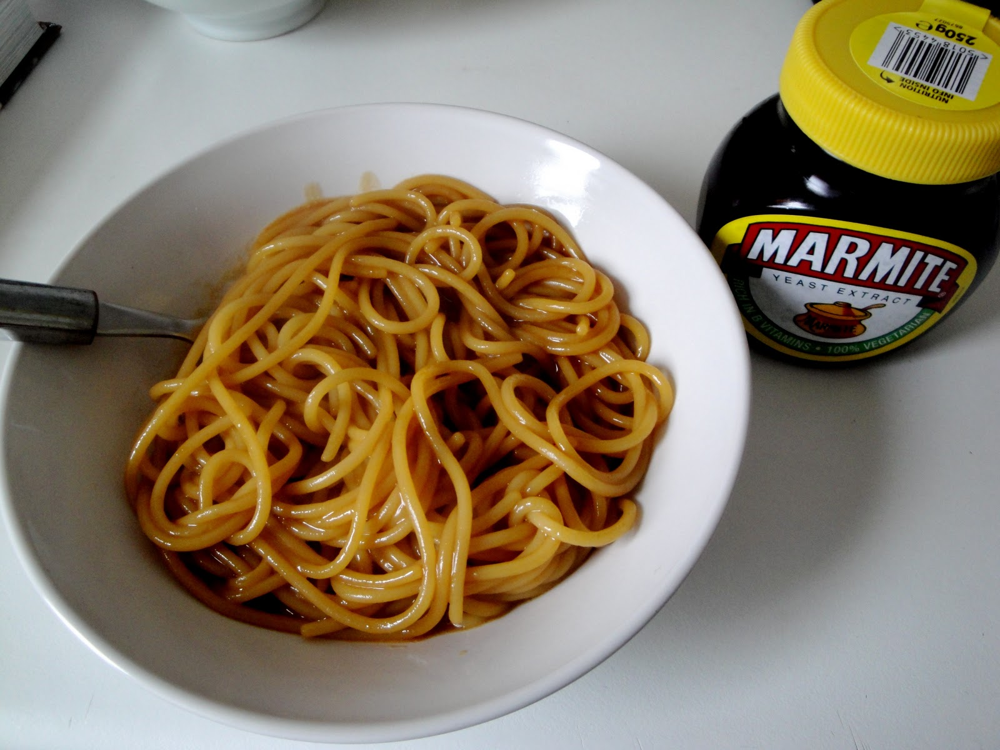

Marmite Spaghetti

Description
Recipe for when you're feeling extra lazy.
Tastes better than it sounds, I swear.
Ingredients
- 100-150 grams of spaghetti
- 1 tbsp marmite
- 50 grams butter
- 1 tsp minced garlic
- grated cheese of your liking to taste
Steps
- Cook the spaghetti al-dente (7-9 min depending on brand)
- When pasta is almost cooked, melt the butter in a saucepan, add the minced garlic and let it stir-fry for about 30 seconds. Drain the pasta, reserve 1/2 cup of water it's been cooking in.
- Add marmite and couple of tablespoons of reserved pasta water, mix the sauce well. Toss in your cooked spaghetti.
- Serve with cheese!